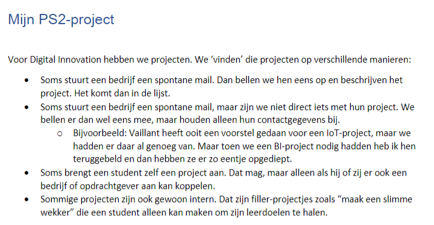

Requirement Analysis
Beschrijving:
Het doel was om een analyse- en ontwerprapport te maken voor de automatisering van de projectverdelingen voor de studenten van Digital Innovation. We moesten ook een prototype maken voor de website, die u hier kunt vinden. Mijn bijdrage aan dit project was het opstellen van een aantal use cases en het maken van de geschikte prototypeschermen. Dit project heeft mij geleerd dat een analyse heel belangrijk is voordat je begint met programmeren.